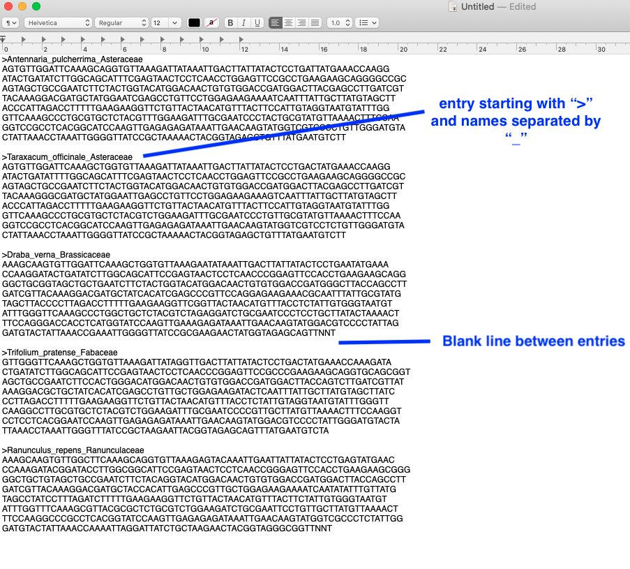

Lab 5: Brassicaceae, Malvaceae, Ericaceae, and intro to phylogenetics
Evan Hersh, Mannfred Boehm
24 August, 2020
Brassicaceae - Mustard family

Malvaceae - Mallow family

Ericaceae - Heath family
Introduction to phylogenetics
Motivation
Phylogenetics is one of the most important and controversial fields within plant taxonomy. The ability to sequence and compare plant DNA has split, grouped, and uncovered taxa in ways never expected. In modern plant taxonomy, phylogenetic relationships are a key piece of evidence to consider when delimiting species. In this lab, we’ll be downloading and aligning DNA sequences from five species chosen from your iNaturalist observations. Using these sequences, we’ll construct a phylogenetic tree and consider whether the species relationships support what you have learned about the taxonomic organization (e.g. grouping by family) of these taxa.
Prerequisites
Before starting this week’s tutorial you will have:
completed some pre-assignment reading on DNA barcoding, multiple sequence alignment, phylogenetics, and their role in plant taxonomy,
completed some pre-assignment reading on why/how Genbank is used by plant taxonomists,
chosen five plant species from your iNaturalist project to use in this activity.
Outcomes
By the end of this tutorial you will have:
experience using Genbank, MUSCLE, and NCBI tree viewer.
familiarity with Genbank and the types of data that can be obtained,
the tools and knowledge needed to create your own phylogenetic tree as part of a taxonomic research project.
Activity 1: Search Genbank for sequence data
After selecting your five focal species, navigate to the Genbank website. From the drop-down menu next to the search bar, make sure that the database selected is Nucleotide. Type in scientific name of your first plant, followed by the name of the barcode. For demonstration purposes we’ll use five species of pussytoes (Antennaria, Asteraceae), and the rbcL barcode. Here’s what our first search looks like:

The search will return list of sequence submissions from various authors and projects that have barcoded Antennaria. When possible, use sequences that were generated from the same project — you can check by clicking on an entry and looking at the AUTHORS and TITLE entries. For our Antennaria sequences, we’ll be using rbcL sequences generated by Fenneman and Graham (2016) as part of their contribution to barcode over 5000 vascular plants representing the flora of Canada.
After entering your search query, click on the ‘FASTA’ option under any entry to see the DNA sequence:

To save the sequence, we’ll copy sequence string, as well as the header information (everything in the box above). Paste the FASTA entry into a text editor. Repeat this procedure for the remaining four taxa, pasting the FASTA entries into your text document, with each entry separated by a space. Then, simplify the headers by writing the scientific name with the genus and species separated by an underscore "_“. Make sure to keep the”>" symbol at the beginning.

Activity 2: Multiple Sequence Alignment
In order to compare the similarities of our sequences, we need to first align them. This ensures that any differences between samples are not caused simply by different reading frames. While we could align our sequences by eye, we’ll use the MUSCLE algorithm which is much faster and reproducible. Navigate to the MUSCLE webpage, and paste all of your sequencs into the first box:

After pasting your sequences, scroll down and click “Submit”. The results page will show you the optimal alignment of your five rbcL sequences. To see the associated phylogram, click on “Phylogenetic Tree” tab:

MB maybe we want to get them to continue by pasting the Tree Data in to NCBI Tree Viewer?